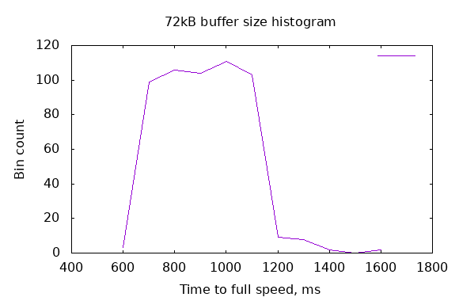

Running some long-running programs with OpenMPI means at least
where “system” means the sum of the computers, wires, network switches, and anything that might affect perfomance. Like absence of cosmic rays.
CPU stability might mean that the clock speed stays high or that auto-tuning
of CPU performance is switched off. A sysctl called hw.perfpolicy
controls auto-tuning and hw.setperf=100 requests full speed.
Concurrent network throughput accounts for a LAN switch that may not be fully wire-speed, so that one node-to-node throughput might be slower than throughput between another pair of nodes.
Documentation for these items might be reassuring. However, there is no substitute for testing, and especially testing an artificial benchmark with known and defined results will help develop or maintain confidence in the system.
OpenBSD includes the tcpbench utility with useful options like reporting intervals, test durations, and separation of duties into client and server.
First, start servers on each node:
listn=4
listH="dell1:1,dell2:1,dell3:1,dell4:1"
mpirun -np $listn -H $listH tcpbench -s
Second, for each client, run against all four servers:
list="dell1 dell2 dell3 dell4"
for h in $list ; do
for a in $list ; do
echo T11SERVER $h $a
mpirun -np 1 -H $h:1 tcpbench -t 7 $a
done
done
The result is quite lengthy, but the gist of it is: node-to-node is 936Mb/s and node-to-same-node is 1050Mb/s. YMMV.
Another observation in the output: the first node-to-node measure is around 500 to 700 Mb/s, followed by the rest at the full speed.
Finally, the speeds are symmetric: node A to node B is the same speed as node B to node A.
Well, 7 seconds isn’t long. Let’s run for hours:
mpirun -np 1 -H $h:1 tcpbench -t 1000 -r 100 $a
That amounts to 16 node-to-node tests at 1000s each, or three+ hours.
The -r 100 was a mistake; it was intended to be 100s not 0.1s (always
read the docs carefully!) Reviewing the results showed throughputs of
elapsed_ms mbps
100 323.078
200 322.614
300 322.035
400 322.846
500 609.666
600 723.189
701 712.068
801 720.525
901 721.220
1001 877.025
1101 937.030
1201 937.261
and so on
This was unexpected.
The same pattern was observed in all 12 node-to-other-node tests.
If you are familiar with the internals of TCP, you will recognize a TCP “slow-start” algorithm in play. To avoid congestion, TCP starts slowly and learns (with a simple feedback arrangement) to increase the throughput by adjusting the number of permitted packets in flight.
But we know better! There is no congestion in a LAN with a wire-speed switch in this experiment.
Back to the purpose of the test: after 1000 or 1100ms, the throughput on all node-to-other-node measures stayed constant at high 936Mb/s or slightly higher.
Well of course I know better, but let’s experiment a bit anyways. Some possibilities:
tcpbench -B option should affect performance with smaller or
larger initial buffer sizes.As it turns out, smaller (or just different) buffer sizes with rfc3390 set to 1 or 0 had no effect. There was a lot of variability from test to test. These were not repeatable: the same buffer size resulted in different intervals to the maximum throughput. Sometimes 700ms and often 1100ms or 1200ms.
Changing the -B option in a range from 5k to 512k resulted in widely varying results that were not repeatable. Sometimes the throughput reached the maximum within 600ms, sometimes within 1500ms. The method was
for a in `jot - 5 32` `jot - 40 128 8` `jot - 160 512 32` ; do
echo -n buffer is $a kB
tcpbench -t 2 -r 100 -B $(( $a * 1024 )) dell2 |
awk '1*$3 > 937 && NF==4' | head -1
done
See the histogram. Adjusting buffer sizes had no effect; the histograms all look the same.

There is nothing to be adjusted for NIC tuning; setting MTU up to 9200 bytes is not possible on my LAN as I have machines stuck at 1500 bytes on the same subnet.
The TCP slow-start seems to be socket-specific; there is no internal memory or history of what suitable internal TCP timers and buffers are good for node-to-node communications.
The other conclusion I draw: don’t reopen sockets; reuse the same ones over and over. Fortunately this is what OpenMPI does.
February 2020
Links:
RFC 3390 Increasing TCP’s Initial Window
RFC 5681 TCP Congestion Control
OpenBSD Numerics Experience - 1 - RNG
OpenBSD Numerics Experience - 2 - RNG floats
OpenBSD Numerics Experience - 3 - FFTW
OpenBSD Numerics Experience - 4 - CAF
OpenBSD Numerics Experience - 5 - MPI Networking
OpenBSD Numerics Experience - 6 - Memory Models
OpenBSD Numerics